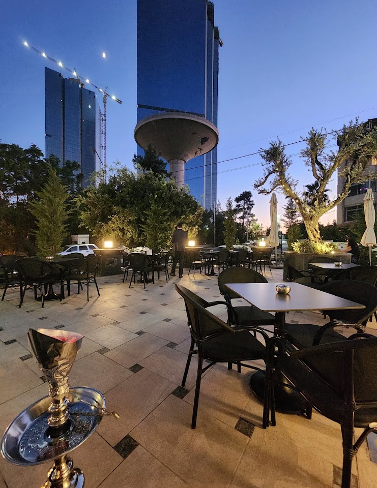
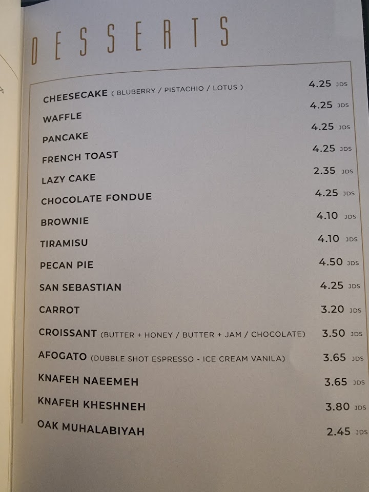
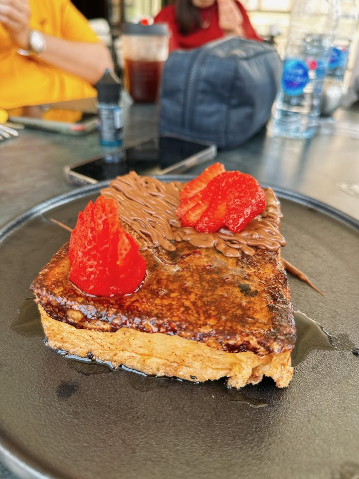
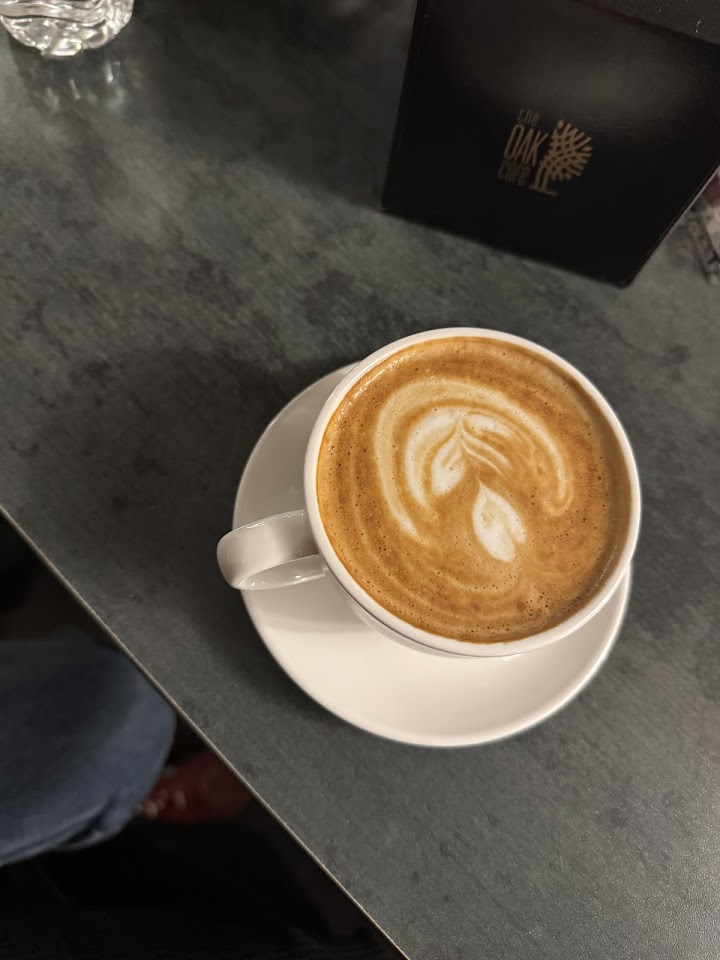

Specialty Coffee
- Espressosingle origin
- Flat Whitevelvet milk
- Cortadobalanced
- V60 Pour-Overby the cup
- Filter Batchdaily rotation
A specialty coffee house wrapped in oak tones — pour-overs, fresh salads, and house-made desserts, from late morning till late at night.

The Oak Cafe is a specialty coffee house built around two things: a great cup and a room you don't want to leave. Light pours over honey-toned wood, the espresso machine hums, and the day stretches comfortably from late morning into the small hours.
Alongside the coffee, we keep a short, fresh kitchen — bright salads and bowls, and a case of house-made desserts that change with the mood. It's the kind of place regulars keep finding their way back to.



We're in Amman, Jordan. Open late, seven days a week.